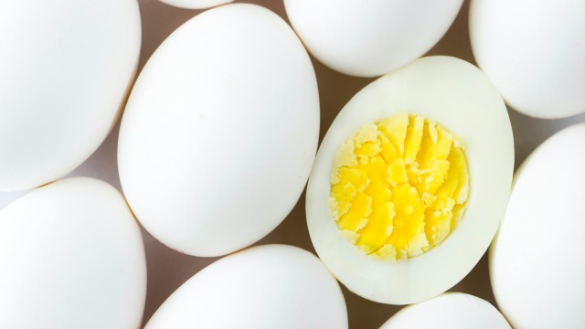

Perfect hard-boiled eggs

Hard boiled eggs took me a while to get right. Often I'd end up overcooking them,
causing the yolk to take on a dry, powder-y consistency and even turn slightly green.
Another common issue is the peeling step -- that shell can be awfully difficult to
peel off if you don't have the right strategy going in. Here, I'll write down my
approach so that I have no excuse for messing this up down the road.
Ingredients
- Several eggs. I find that making like 6-8 at a time is best, but it probably
depends on the size of your pot, how quickly your water boils, etc.
- Water to boil. Enough of it to cover the eggs + ~2 inches of leeway
- A large bowl of cold water from the tap, set aside
- Salt + pepper to taste
Steps to prepare
-
Fill your pot with water then carefully add the eggs, being sure not to
damage the shells (otherwise some weird stuff can happen during boiling)
-
Add a touch of salt to the water. I find that this facilitates easier peeling
in addition to the cold water trick we'll use later.
-
Put the pot on a high burner, uncovered, and bring to an aggressively
rolling boil. Seriously, don't get timid, scorch those eggs.
-
Once a rolling boil is reached, cover the pot and turn off the heat. Let rest
on the hot but turned-off burner for 10 minutes.
-
Decant the still-simmering water from the pot. Then carefully transfer the eggs
to the bowl of cold water, and let rest for 10 minutes or more. This will force
the inside of the egg to contract, easing peeling tremendously.
-
Note:
At this time you can prepare another batch of eggs to get things going in
parallel, so long as you change out the cold water between batches. Cartons of
18 eggs are cheap at the store, so take advantage.
-
When ready to serve, peel the egg shell along with the thin film beneath it.
Cut in half through the yolk, and season the interior with salt and pepper to taste.
Serve cool.
Back to home